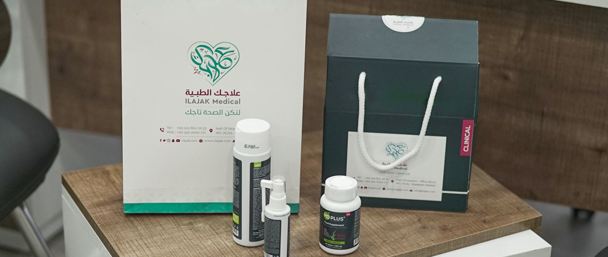
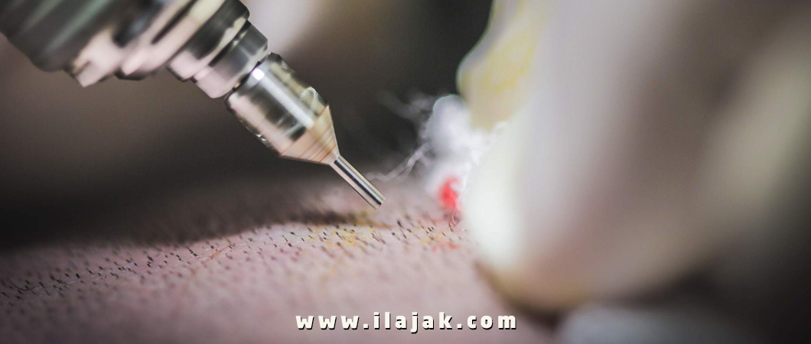
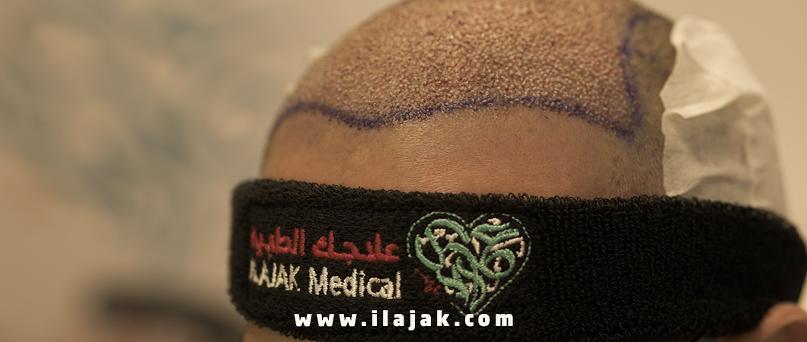
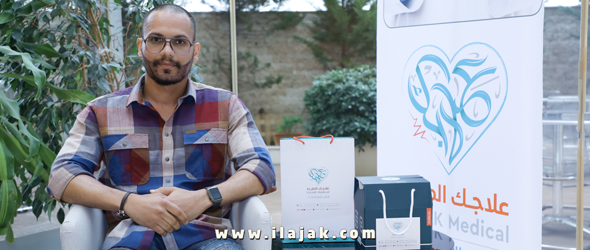

Hair Transplant Publications
Hair transplant is a cosmetic procedure used in recent years with painless and advanced techniques, it is done through the use of other donor areas of the body.

Details of Hair Transplant costs in Istanbul Turkey 2021
Hair Transplant costs in Istanbul differ from one hospital to another, we will share how to calculate the costs of Hair Transplant in Istanbul, Turkey
Hair transplant calculator turkey
How much does a hair transplant cost in Turkey? One of the most frequently asked questions in the Internet search engines, but to answer this question we must clarify things that have a great role in determining the costs of hair transplantation, and among these things:
- Initial examination, reports, and medical examinations required before operating.
- The surgeon assigned to perform the hair transplant: Senior, experienced and skilled doctors are paid more what results in higher cost of Hair Transplant.
- Capabilities and reputation of the hair transplant center: costs are relatively higher in centers with high medical potential and excellent reputation.
- The number of required hair follicles: the main criterion for determining the cost, as the more the number of hair follicles required, the greater the cost.
- The area that requires hair transplantation: The cost of hair transplantation in Turkey differ according to the area of the head where the transplantation is required, as the cost of hair transplant at the forelock differs from the cost Midscalp, Crown, or sides, and the prices of Hair Transplant of the beard or mustache or eyebrows are often higher than the head hair transplant prices, due to the different hair type.
- The technology used and the quality of the equipment and devices used in Hair Transplant: The costs of Hair Transplant in Turkey vary according to the techniques and tools used. Some of them are modern and have better results, and does not leave scars, so the cost is higher.
- Anesthesia quality: varies according to the skill and experience of the anesthesiologist, and the quality of the materials used for the anesthesia.
- Countries where hair transplant centers are located: doctor's wages are high in some countries, taxes are many and expensive, in addition to other measures that lead to high health costs, while Turkey is one of the best countries in terms of low costs while maintaining high health quality.
- Flight, travel, transportation, accommodation, and food expenses if you reside outside Turkey.
Hair Transplant Before and After Images
 before
before
 after
after
Technique
Sapphire
Grafts Number
3000 Grafts
After
8 Months
 before
before
 after
after
Technique
Sapphire
Grafts Number
3000 Grafts
After
8 Months
 before
before
 after
after
Technique
Sapphire
Grafts Number
43600 Grafts
After
6 Months
 before
before
 after
after
Technique
Sapphire
Grafts Number
3300 Grafts
After
one year
 before
before
 after
after
Technique
U DHI
Grafts Number
3500 Grafts
After
one year
After hair transplant in turkey
It does not stop at the end of the operation, but there are other costs after the Hair Transplant, and it is related to:
- The cost of essential treatments and products for personal hygiene after the operation, such as shampoo, soap.
- The cost for follow-up and advice after the Hair Transplant.
Read more : Hair Transplant for Men in Turkey

Reasons for the price difference for hair transplant in turkey
Hair transplantation prices vary in Istanbul in particular, and Turkey in general, according to the development and quality of hospitals. Prices change from one hospital to another, according to the factors mentioned above. The hospital with a good reputation and experience, costs are usually higher than others, and also the surgeon who supervises the operation, if has experience and skill, their wage will be higher than other doctors, in addition to the quality of the materials and devices used, and the technology also has a big role in determining the cost of Hair Transplant.

The cost of Hair Transplant in Turkey in Euro
The average costs of Hair Transplant in Turkey 2021, are cheaper generally considering the costs in the other countries of the world, whether they are Arab or European countries, for example, the prices of Hair Transplant in Euro vary according to the technology used, the number of hair follicles required, and the program accompanying the operation the general average cost of Hair Transplant ranges from 1000 to 1250 Euro.
The cost of Hair Transplant in Turkey in Pound Sterling
The great development of Hair Transplant in Turkey, and the reasonable costs offered compared to other countries, and the high prices for Hair Transplant in the United Kingdom made those who wish to have Hair Transplant focus their attention on Turkey.
Therefore, many questions about the costs of Hair Transplant in Pound Sterling reach us in Ilajak Medical, making it easy for them to calculate the costs of the medical tourism they will go for, as the cost of Hair Transplant ranges between 875 to 1100 Pound Sterling, depending on the techniques used, the number of follicles required, and the program accompanying the operation.

The cost of Hair Transplant in Turkey in US Dollars
The cost of Hair Transplant in Turkey compared to many European countries is relatively cheap, and the costs of Hair Transplant in Turkey vary according to many factors, including the techniques used during transplantation, and the number of required follicles to be transplanted, and the prices also vary depending on the program accompanying the operation. In general, the cost of Hair Transplant in Turkey in US Dollars ranges between 1200 and 1500 USD.
The cost of Hair Transplant in Turkey in Canadian Dollar
There is a great demand from foreign tourists wishing to have Hair Transplant operations in Turkey, which has become a destination of Medical Tourism, and a favorite destination for many tourists in the European and western world, keeping in mind the things that play a big role in determining the prices of hair transplant operations, such as the number of follicles, the quality of technologies, and accompanying programs, the cost of Hair Transplant in Turkey in Canadian Dollar, range from 1520 to 1900 Canadian Dollar.

Ilajak Medical: Hair transplant techniques in istanbul - turkey
We have already mentioned some details about Hair Transplant in Turkey, but there is no doubt that those who wish to do Hair Transplant will encounter many medical companies working in this field, so what distinguishes Ilajak Medical?
- Men's Hair Transplant
- Beard and mustache Hair Transplant
- Hair Transplant for women
- Eyebrow Hair Transplant
- Hereditary baldness treatment
We also provide in Ilajak Medical hair transplant with the latest technologies such as FUE Sapphire and DHI – CHOI
Hair transplant in turkey reviews and results
Finally…
It is important for the patients to discuss the expectations of the results of the operation, and to inquire about all questions that come to their mind, and by contacting us you will find a complete answer about everything related to Hair Transplant and its advanced techniques.
Common questions for hair transplantation in Turkey
Hair Transplant is considered one of the expensive operations in Europe، America and the world، it is affordable، in Istanbul، Turkey، where the hair transplant ranges between 1،200 to1500 $
It is an operation in which a surgeon transfers hair follicles from a dense hair region، such as the sides and back of the scalp (the donor area)، to another area that suffers from hair loss (the beneficial area).
Because it combines high quality and reasonable prices، with years of experience، in addition to the possibility of getting out of the work pressure and hiking in the most beautiful places in the world in Istanbul.
Hair Transplant is considered a permanent procedure if it is done right and if the donor's hair is selected from the hair loss resistant zone.
Hair Transplant is considered pain-free due to local anesthesia، which lasts for approximately 12 hours، and the patient is also provided with appropriate analgesics for the post-operative period.
Hair transplants are typically more successful than over-the-counter hair restoration procedures. But there are some factors to consider: Anywhere from 10 to 80 percent of the transplanted hair will fully grow back in an estimated three to four months. Like regular hair.
Yes، definitely hair transplant is worth its procedure. It permanently restores the hair by transplanting new follicles into balding or thinning areas.
Yes of course، If you are losing hair or getting bald then hair transplant is the best option to restore your natural hair look.
The FUE (Follicular Unit Extraction) hair transplant procedure is a technique where the required amount of follicular unit grafts are extracted from the patient's bald resistant donor areas and are then transplanted in the balding or thinning areas of the patient's scalp.
Yes، within 2 to 3 weeks after surgery، the transplanted hair will fall out، but you should start to notice new growth within a few months. Most people will see 60% of new hair growth after 6 to 9 months.
Yes absolutely، by transferring hair from any hair resistant zone in your body mainly back of your head to bald or thinning follicles zone.
Hair transplant surgery is normally safe when performed by a qualified، experienced certified surgeon. Still، individuals vary greatly in their physical reactions and healing abilities، and the outcome is never completely predictable. As in any surgical procedure، an infection may occur.
Celebrities prefer good reputation centers and experienced doctors، we in Ilajak Medical combine good reputation، highly experienced doctors، and reasonable prices.
Yes، the reason behind that it is transplanted from the hair loss resistant area.
It's normal for the transplanted hair to fall out two to three weeks after the procedure. This makes way for new natural hair growth.
The cost of hair transplants is dependent on many different factors. It is highly variable and typically ranges anywhere from $4،000 to $15،000 which is considered very expensive
Scars occur in the donor area of your scalp- the area where hair follicles have been taken out.
Good Hair Transplant can simulate natural hair look and direction.
Hair Transplant is a safe، and permanent hair restoration procedure without pain and minimal side effects.
The best Hair Transplant depends on individual needs and circumstances along with the physician recommendation.
Hair transplant works on transferring real hair follicles form personal donor sites.
Turkey is known for the best Hair Transplant surgeries and surgeons in the world، we in Ilajak Medical work with the best Hair Transplant Specialists.
Some of Hollywood famous actors like 1- John Travolta 2- Mel Gibson 3- Nicolas Cage.
If you have a receding hairline، getting a hair transplant is the best solution. When performed by an experienced، skilled surgeon، a hair transplant can restore your hairline and give back the volume and thickness that you had in the past.
The most common cause of Hair Transplant fail is Post-Operative infection.
The answer is NO، unlike organ transplants، you are your own donor for a hair transplant. If you receive hair، follicles، and tissue from someone else، your body would reject them without immune-suppressant drugs. You donate your hair from what are called your donor sites.
Hair Transplant is the most common procedure done for lowering hairlines. In general، the hair transplant procedure is better for women who are seeking more rounding out than actual lowering although it can and does lower the hairline.
The answer is “Yes، gray hair can be transplanted as safely and successfully as a hair of any color.” A misconception about gray hair is that when hair turns gray it is no longer healthy hair. ... Transplantation of gray hair is successful because gray hair is healthy hair produced by a healthy hair follicle
Hair Transplant is a safe procedure، since the beginning till now no clear or close relationship between cancer and Hair Transplant.
Most hair restoration surgeries are not covered by health insurance. However، there are some circumstances، such as when hair loss is related to a disease، in which insurance may help pay for the procedure therefore you may also want to contact your health insurance، plan provider.
Most hair restoration surgeries are not covered by health insurance. However، there are some circumstances، such as when hair loss is related to a disease، in which insurance may help pay for the procedure therefore you may also want to contact your health insurance، plan provider.
although hair transplants can be carried out for anyone above the age of 18، it is advisable not to have a transplant until the age of 25+. Younger men may not be the best candidates since their hair loss pattern may not yet fully be determined.

Ilajak Medical© | A passion for care
Latest Articles, Health News, Clinical Research, and more.
Keratoconus and cataracts , symptoms and types
What is Keratoconus, How it looks and what are the symptoms? Also, find out Keratoconus’s types and stages , Learn more with ILAJAK Medical.
Best Spa Resorts with Medical Services clinics in Turkey.
In this article, we will learn about the importance of health resorts and the treatment services they offer and the top and famous health & medical resorts in Turkey
Zirconia teeth type and costs in Turkey 2021
Zirconia dental crowns and bridges are used to treat and protect the affected teeth due to decay or fractures, etc, In this article we will learn about the advantages and drawbacks of Zirconia Crowns and bridges
Benefits of porcelain teeth and costs in Turkey 2021
Porcelain crowns and veneers are used to strengthen and protect damaged teeth due to decay or cracks or any other reason. In this article, we will discover dental porcelain and its advantages and risks.